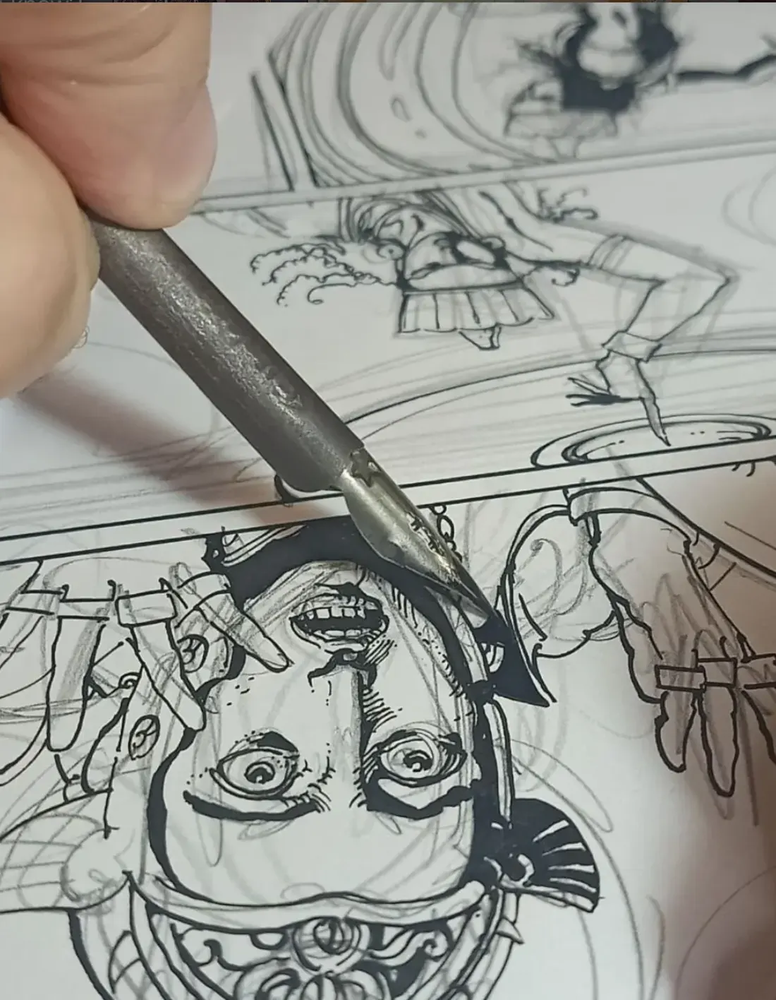
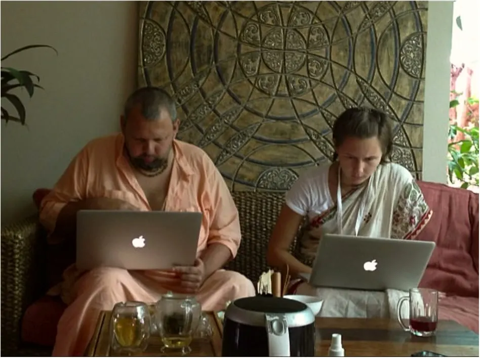
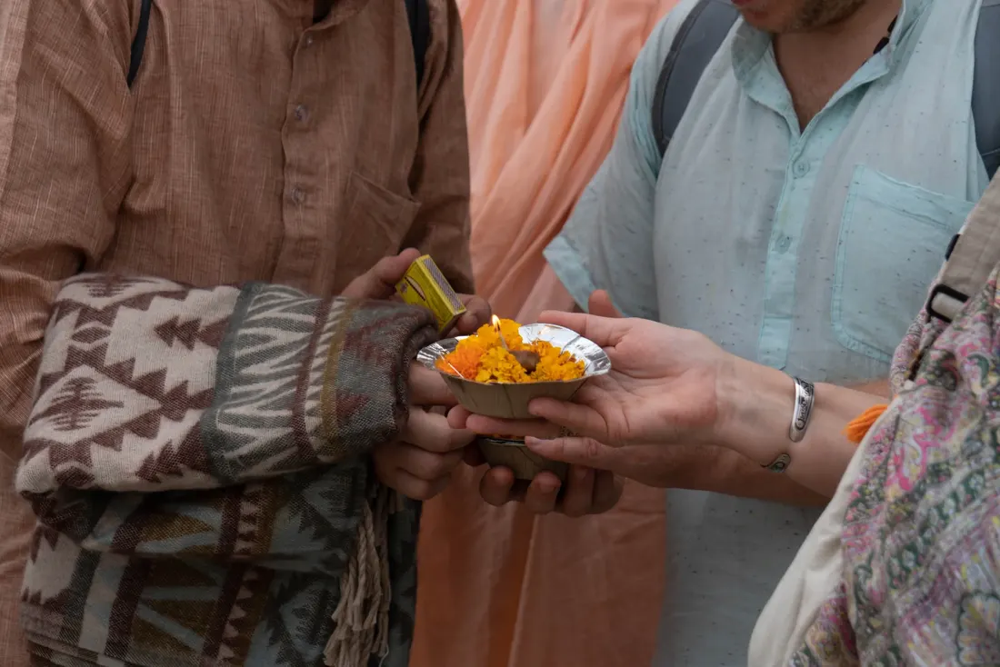
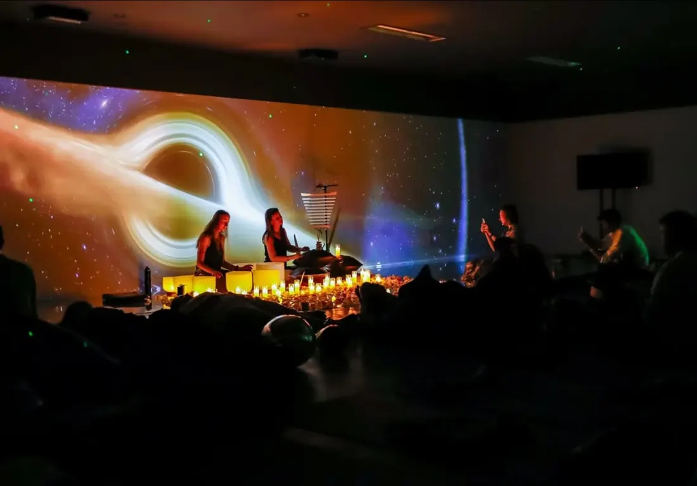

Запись 601
ИллюстрацияДхарма Гита, глава 4
Пять работ для слоя читалки. Источник — текст главы.
Гонорар и доля от слояКниги, комиксы, звук, колоды, игры и встречи. Одна культура в разных формах.
Песнь Пути
Диалоги Учителя и учеников о дхарме — пути через поле битвы собственной жизни. По преданию, этот текст нашли монахи, возвращавшиеся из Индии в Китай.
Говорят, что этот текст нашли монахи, возвращаясь в родной Китай из паломничества в Индию.
По пути домой, в далёкой пещере, где они остановились на ночь, монахи обнаружили древние свитки, потрёпанные временем.
На них были записаны наставления Великого Учителя. Его имя затерялось в веках, но слова всё ещё хранят огонь истины.
Люди приходят из ленты, с видео, со встречи, из магазина. Каждая дверь ведёт в то же знание и показывает его в своей форме.
Первые главы открыты. Читалка помнит, где вы остановились.
Открыть →Чтение вслух, беседы, подкасты. Тот же текст — на слух.

Эпос в рисунке и приложение с интерактивными страницами.

Лекции Авадхута Махараджа с расшифровками и тайм-кодами.
Открыть →
Записи, концерты, звук для читалки и для дороги.
Серии, съёмки из дороги, каналы вокруг книг и комикса.
Одежда и предметы. На вещи один знак, а не вывеска.

Еда, чай, день: как знание входит в быт.

Колоды, настольные и цифровые игры по сюжетам книг.
Шесть ступеней — шесть колец знака. Человек стоит на той, на которую попал, и видит следующую.
| Откуда пришли | Что видят первым | Куда дальше | ступень |
|---|---|---|---|
| Reels, Shorts, TikTok | Карточка: одна цитата или сцена | Эпизод целиком, затем читалка | |
| YouTube и подкасты | Страница выпуска: тайм-коды, источники | Книга, к которой он относится | |
| Бумажная книга или колода | QR внутри: слои этой книги | Читалка со слоями навсегда | |
| Событие и встреча | Анкета по QR на месте | Моё служение, смены, чат | |
| Приложение с комиксом | Страница сюжета | Книга, колода, обсуждение | |
| Поиск | Справка: термин, место, персонаж | Все формы вокруг этого слова |
Задания, короткие когорты, релизы с договором. Кураторы отвечают за качество и за верность тексту.
Пять работ для слоя читалки. Источник — текст главы.
Гонорар и доля от слояДесять петель по две минуты. Без слов, без ритма киртана.
ГонорарВторая песнь, 24 страницы. Сверка с источником обязательна.
Договор на сериюКаждая книга — запись в продолжающейся летописи. Последняя строка всегда остаётся открытой.
| № 001 | Дхарма ГитаПод редакцией Свами Авадхута | Гиты | 2026 |
| № 002 | ИмяСвами Авадхут | Святое Имя | 2026 |
| № 003 | Карма ГитаСвами Авадхут | Гиты | 2026 |
| № 004 | Ведическое мировоззрениеСвами Авадхут | Основы | 2026 |
| № 005 | Путешествие на ЗападСвами Авадхут | Притчи и романы | 2026 |
| № 006 | ожидает следующей формы | —— | |
Знание живо, пока находит новые формы: его передают, перечитывают, переиздают и переживают заново, а оно остаётся собой. ved·Life — издательство, которое продолжает эту линию.
О ved·Life →